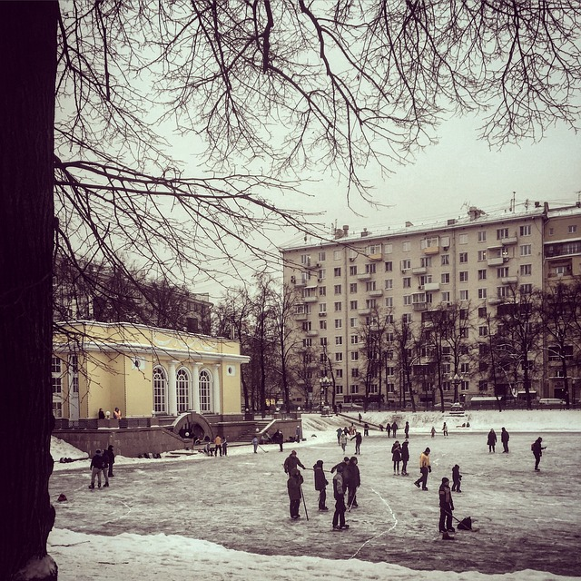
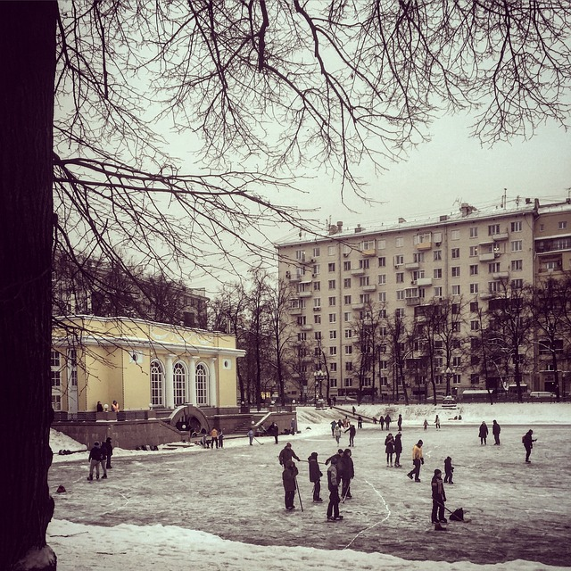

Croisières de nuit : Les croisières de nuit sur la Moskova sont particulièrement populaires car elles offrent des vues spectaculaires sur les lumières scintillantes de la ville illuminée. Ces croisières offrent souvent des dîners à bord et des spectacles de musique en direct pour une expérience encore plus mémorable.

La cathédrale Saint-Basile-le-Bienheureux, également connue sous le nom de Basilique Saint-Basile, est l'une des églises les plus emblématiques de Moscou, en Russie. Contrairement à ce que son nom pourrait suggérer, elle n'est pas une cathédrale au sens traditionnel du terme, car elle n'a jamais été le siège d'un évêché. Cependant,
La cuisine à Moscou est riche et variée, reflétant les traditions culinaires russes ainsi que l'influence des différentes cultures et régions du pays. Voici un aperçu des éléments caractéristiques de la cuisine à Moscou :* La cuisine à Moscou est riche et variée, reflétant les traditions culinaires russes ainsi que l'influence des différentes cultures et régions du pays. Voici un aperçu des éléments caractéristiques de la cuisine à Moscou :

Le marché de Noël à Moscou est une tradition populaire qui attire les habitants et les visiteurs pendant la période des fêtes de fin d'année. Voici quelques-uns des marchés de Noël les plus célèbres et les plus appréciés à Moscou : Marché de Noël sur la place Rouge : Le marché de Noël sur la place Rouge est l'un des plus emblématiques de Moscou. Situé à proximité du Kremlin et de la cathédrale Saint-Basile-le-Bienheureux, ce marché offre une atmosphère féerique avec ses stands décorés, ses lumières scintillantes et ses attractions festives. Vous y trouverez une variété de cadeaux artisanaux, de décorations de Noël, de jouets, ainsi que des stands de nourriture proposant des spécialités russes et des boissons chaudes traditionnelles comme le vin chaud (glühwein) et le thé aux épices.
 
